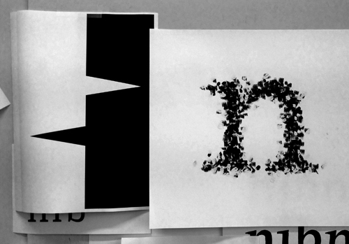
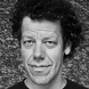
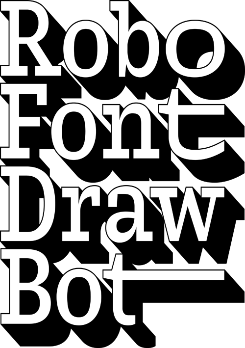

27-28 ноября
|
учебный интенсив TypeCooker-марафон / 12 000 руб.  ведущий: |
|  | |
| программа: | Что произойдёт, если вы посмотрите на свои шрифтовые эскизы с расстоянии 10 метров? а с 20 метров? На этом мастер-классе мы рассмотрим основные параметры шрифтового эскизирования и то, как на него влияют размер букв и расстояние, с которого мы на них смотрим. Может быть, мы увидим что-то новое! |
| расписание: |
27 ноября, четверг 28 ноября, пятница 11.00 — 12.30 12.45 — 14.15 15.15 — 16.45 17.00 — 18.30 |
| вам понадобится: | Все материалы будут предоставлены организаторами. Планируется ручное рисование. Если у вас есть лэптоп, захватите его с собой, он может понадобиться. |
| язык обучения: | Английский |
| адрес: | Москва, Протопоповский переулок, 9 стр. 1. |
1-3 декабря
|
 |
учебный интенсив RoboFont + DrawBot / 12 000 руб. ведущие: Юст ван Россум изучал графический и шрифтовой дизайн в Королевской академии искусств (КАВК) в Гааге, Нидерланды. Работая в берлинской студии Эрика Шпикермана MetaDesign, Юст начал сотрудничество с Эриком ван Блокландом под брендом LetTeRror. После экспериментов со шрифтовым программированием, они создали Beowolf — первый шрифт с собственным интеллектом. Он был выпущен компанией FontShop в мае 1990 года. Среди других шрифтов Юста можно выделить Justlefthand, Instant Types и Advert. В настоящее время Юст ван Россум — независимый дизайнер и программист, живёт в голландском городе Гарлем. Преподаёт дизайн шрифта и программирование в КАВК в Гааге. |
|  | |
| программа: | RoboFont — шрифтовой редактор на основе формата UFO. Один из принципов его работы — полная программная поддержка шрифтовых данных и их взаимодействие с приложениями. DrawBot — мощное бесплатное приложение для MacOSX, позволяющее писать простые скрипты в Пайтоне для создания двухмерной графики. Занятия посвящёны взаимодействию DrawBot с RoboFont и созданию собственных инструментов. Для участия в интенсиве опыта работы с RoboFont и DrawBot не требуется. Все участники получат двухмесячную лицензию на использование RoboFont. |
| расписание: | 1 декабря, понедельник 2 декабря, вторник 3 декабря, среда 11.00 — 12.30 12.45 — 14.15 15.15 — 16.45 17.00 — 18.30 |
| вам понадобится: | Компьютер (Macintosh) с установленными RoboFont и DrawBot. Демо-версия RoboFont: http://doc.robofont.com/download/ DrawBot: http://drawbot.readthedocs.org/en/latest/content/download.html |
| язык обучения: | Английский |
| адрес: | Москва, Протопоповский переулок, 9 стр. 1. |